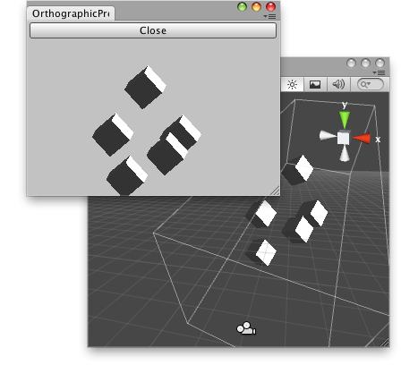

EditorWindow.OnFocus()
Description 描述
Called when the window gets keyboard focus.
See Also: OnLostFocus.

Preview your camera in orthographic mode when you select the window.
// Simple script that lets you preview your main camera in // Orthographic view when selected.
using UnityEngine; using UnityEditor;
public class ExampleClass : EditorWindow { RenderTexture renderTexture; Camera camera;
[MenuItem("Examples/Orthographic Previewer")] static void Init() { ExampleClass window = (ExampleClass)EditorWindow.GetWindow(typeof(ExampleClass), true, "My Empty Window"); window.Show(); }
void OnEnable() { int w = (int)this.position.width; int h = (int)this.position.height;
renderTexture = new RenderTexture(w, h, 32, RenderTextureFormat.ARGB32); camera = Camera.main; }
void OnInspectorUpdate() { this.Repaint(); }
void OnGUI() { if (GUILayout.Button("Close")) { camera.orthographic = false; this.Close(); } if (renderTexture != null) { float w = this.position.width; float h = this.position.height; GUI.DrawTexture(new Rect(0.0f, 50.0f, w, h), renderTexture); } }
void OnFocus() { Selection.activeTransform = camera.transform; camera.orthographic = true; }
void Update() { if (camera != null) { camera.targetTexture = renderTexture; camera.Render(); camera.targetTexture = null; }
int w = (int)this.position.width; int h = (int)this.position.height; if (renderTexture.width != w || renderTexture.height != h) { renderTexture = new RenderTexture(w, h, 32, RenderTextureFormat.ARGB32); } }
void OnLostFocus() { camera.orthographic = false; } }